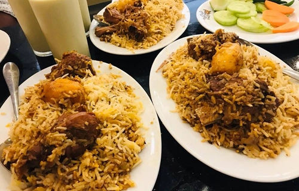
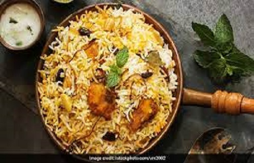
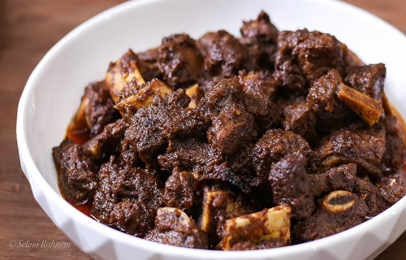

Our Recipies
Our recicpies includes all the authentic foods with authentic taste. You can taste any item, You will
get the authentic teaste. It is possible because of our expereineced Shefs.

Kacchi Biriyani
In a kacchi biryani, layers of raw marinated meat are alternated with layers with wet, pre-soaked,
raw rice (which may be treated with different spices as above), and cooked together by baking or
medium-to-low direct heat (typically, for at least an hour).

Hyderabadi Biryani
Hyderabadi biryani, also known as Hyderabadi dum biryani, is a style of biryani from Hyderabad,
India made with basmati rice and goat meat and cooked with the dum pukht method. Originating in the
kitchens of the Nizam of Hyderabad, it combines elements of Hyderabadi and Mughlai cuisines.

Kala Bhuna
Kala Bhuna is a famous meat delicacy from Bangladesh. This dish can be prepared with beef.
The beef is extra cooked. A lot of ingridents is used to make the carry so spicy. If you are from
inidan continent or spice lover then this food is heavenly dish for you.